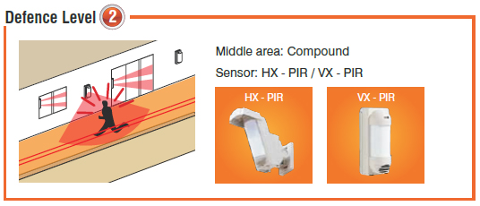
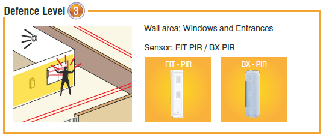
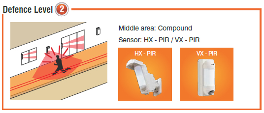
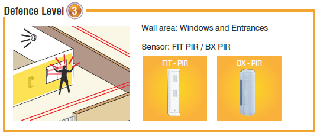

Ceasefire Outdoor & Perimeter Detectors
The risk begins far beyond your front door.
Security measures that alert you to break-ins to
your premises still leave you vulnerable. That’s
because they allow the threat to infiltrate the
building before alerting you. Not only does this
put you in danger, it needlessly endangers your
loved ones and your property.
Appointing security guards might provide a
measure of security, but it doesn’t ensure your
property is completely secured. Not only is there
room for human error on the part of the most
diligent guard, all it takes is a moment’s
inattention for burglars to force their way into your
property.
When it comes to threats, an offensive approach
is always better than a defensive one. Keeping the
need for intensive security measures in mind,
Ceasefire now provides a foolproof security
system that stops burglars in their tracks, before
they can penetrate your property. Ceasefire
presents Vigil – an alarm-based security system
that secures the gates and walls around your
property.
Using dual infra-red detectors to detect unusual
activity, Vigil raises the alarm if the walls
surrounding your property are breached or if your
gate is threatened. Not only does this
revolutionary system assure you of the security of
your property, the alarm and alerting systems
serve as a deterrent to potential threats.
Vigil is ideal for private homes and villas,
factories, residential societies, offices, malls,
corporate parks and commercial complexes.
After all, it’s perfectly equipped to keeps your
property’s perimeter well protected, keeping
threats where they belong – outside!
How Vigil works
Dependable and untiring, Vigil never takes a
break. Vigil offers a 24x7 security solution, virtually
sealing off your gates and the boundary walls
around your property from intruders. Featuring
dual infra-red sensors with different ranges that
can differentiate between environmental
disturbances and genuine threats, Vigil ensures
that danger cannot come unannounced – ever!
Offering wireless convenience, stylish design
and dual detection zones for superior stability
and improved false alarm protection for
reliability, Vigil’s detectors are also weather
proof and have been designed to be
environmentally responsive to ensure
customisable installation.
Vigil offers multiple types of outdoor and perimeter
detectors – AX AIR, HX – PIR, VX PIR , BX PIR and
FIT PIR – that can be installed according to the
characteristic of your property.
Co-ordinating the network of perimeter
detectors is a state-of-the-art Control Panel,
that sets off a piercing alarm as well as alerts
you of the intruders.
The 3-Tier Defence levels
.jpg) 



Vigil and how it can secure your property
VillasVigil’s 3-tier defence alerts you about out-of-the-ordinary occurrences such as a burglar scaling the
compound walls or cutting your gates.
Residential Societies
Though the size of such
properties make them difficult
to guard, Vigil provides
assistance to the security team
and will alert them to any
suspicious activity around
the boundary.
.jpg)
Commercial Complex
Vigil’s infra-red rays around the gates and perimeter walls keep commercial complexes secure even
when they are deserted by night.
The Complete Range of Vigil Security Systems and Products
.jpg)
AX 100/200 TFR
The AX-AIR signals a revolution in the perimeter security industry. Easy to
use, the AX AIR comprises a point-to-point transmitter and receiver, which
cover a long range - AX 100 (approximately 30 meters) and AX 200
(approximately 60 meters).
HX PIR
The most important element in a reliable outdoor detector is accuracy in
distinguishing a human from a small animal. The exclusive pyro element
on board enables the HX PIR to project an ideal detection pattern, allowing
for more accurate detection of humans and less false alarms.
.jpg)
VX PIR
The VX PIR is not only ideal for intruder prevention it can also be used as a
safety warning device to alert you if children enter unsafe areas such as
the swimming pool. As it plays a recorded message the instant it detects
movement, VX PIR can also be used to automatically greet customers
entering a store.
BX PIR
BX PIR creates 24m unique dual-side detection areas that protect wide
horizontal areas around buildings and will trigger alarm before the breakin.
With this unit you don't have to worry about false alarms. It doesn't
activate unless the upper and lower detection zones detect a moving
object.
.jpg)
FIT PIR
Versatile and reliable, FIT PIR is the perfect solution for those outdoor
areas where environmental disturbances and small animals may cause
false alarms. This compact, invisible outdoor sensor is highly reliable and
can be used in various locations such as outside windows, near pools,
garages, balconies and balcony doors.